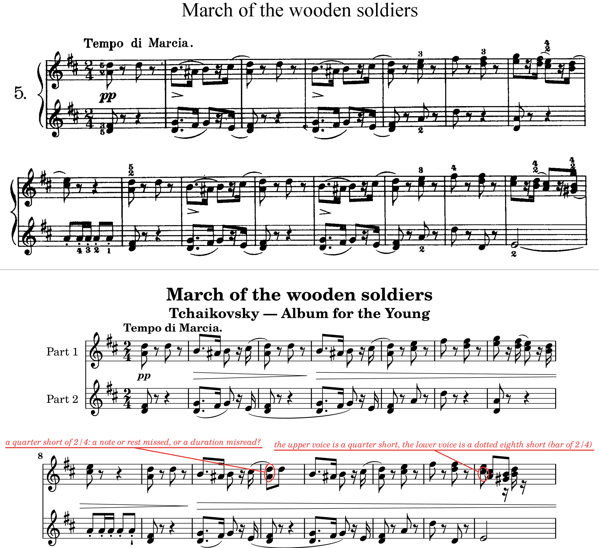

What it is
Lily# Scan Import reads a page image or a PDF of printed music and writes it as
Lily# text — a .lys you edit, play and engrave like any other. It does not
pretend to read perfectly: the places it is unsure of are marked in the text with
@todo, each with a note on what to check, and the
scanned page opens beside the score so you can compare the two bar by bar.

It is a separate extension by the same author, Lily# Scan Import (Beta), that carries the reader; the commands that run it are Lily#'s, and it shows nothing without Lily#. It is in beta and free while it is: later versions may be offered for a fee. It runs on Windows (x64) only, and needs the Lily# extension at 0.13.0 or later.
Install it
Two ways, and both end the same:
- Let Lily# offer it. On Windows, run Convert Image/PDF to Lily# (.lys)… from the command palette (Ctrl+Shift+P). When the reader is not installed, the command offers Install Scan Import first; accept, and VS Code installs it from the Marketplace. Run the command again and it reads.
- From the Extensions view. Ctrl+Shift+X, search for Lily# Scan Import and install the one by yotsuda — or open its Marketplace page.
VS Code keeps it up to date as it keeps every extension. When a Lily# needs a newer reader than the one installed — a command, a field, a fixed reading it is written for — it offers Update Scan Import before it reads; decline, and it reads with the one you have. Not installed Lily# yet? Get started walks through it.
Read a scan
- Pick the pages
Right-click an image (
.png,.jpg,.bmp,.tif) or a PDF in the Explorer and choose Convert Image/PDF to Lily# (.lys)…, or run it from the palette and choose the files. For a piece scanned page by page, pick its pages in order; a PDF brings its pages with it. - Wait for the reader It runs on your computer, page by page; a progress notice shows at the bottom right until it is done.
- The score opens
The
.lysis written beside the image and opens with the preview. Two files land beside it:NAME.omr.json, where each bar is on the page, andNAME.omr-pNN.png, the pages with the marked places boxed. Lily# reads the first to show the scan beside the score; neither is needed to compile the music.
What the reader writes is ordinary Lily#: parts for the staves, a section for the piece (one per rehearsal mark where the page has them), absolute octaves, the title, composer, tempo and key and time signatures it found. A place it was unsure of carries a mark with a short note — what it suspects, not where, since the mark already stands on the note:
<a d'>8@todo(b11 "a quarter short of 2/4: a note or rest missed, or a duration misread?") d'8 |
Fix the bar, delete the mark, and the red goes. A bar with no mark can still be wrong — the marks say where the reader doubted itself, not where it was right.
Check what it read
The marks show in red in the preview, as every @todo does; click one and the
editor goes to it. To check against the page itself, open Show Original Scan — the
picture button in the editor's title bar, or the palette. It opens the scanned pages in a
pane beside the score, and the two work as one:
- The same red frames on both. Each mark is framed with a dashed red line on the scan and in the preview, around the same bar of the same part on each side — heavier on the scan where the reader was less sure.
- Click to go. A click on a bar of the scan puts the caret in that bar's music; the caret, wherever you move it, lights the bar it is in on the scan.
- They scroll together. With Scroll with the preview ticked, scrolling either pane scrolls the other to the same bar, cut at the same height — the top of one is the top of the other. Drag the page to scroll it, Ctrl+wheel to zoom, right-click for Fit Width and Reset Zoom (1:1), as in the preview.
- Marks below… The slider hides the marks the reader was surer of than its setting (its confidence, 0 to 1; the default shows those under 0.8), so you can take the doubtful ones first and widen the net after.
Once you have corrected a bar, you may want to know whether it now matches the page. With
the setting lilysharp.omr.verifyOnSave on, saving has the reader engrave the
corrected score again and compare it with the scan, bar by bar: the marks that still differ
stay, the rest go. It is off by default.
The commands themselves, one by one, are on Editor commands; the setting is in the settings table.
What it reads, and not yet
Printed (engraved) music: staves, clefs, key and time signatures, notes and chords, rests, dots, accidentals, beams, tuplets, ties and slurs, grace notes, several voices on a staff, piano systems, multi-bar rests, percent repeats, octave lines, guitar and bass TAB, drums; dynamics, hairpins, pedal marks and articulations; the tempo marking, the title, subtitle, composer and poet over the first system, and the rehearsal marks in boxes over the staff, which become the sections of the file. Best results come from clean digital pages (PDF or image exports of LilyPond, MuseScore, Dorico, Finale) and good black-and-white scans at about 300 dpi.
Not yet, while in beta:
- Lyrics and chord names are passed over — not misread as notes, but not written.
- Repeat bar lines, volta brackets, D.S. and Coda are not read: the piece comes out as played once through.
- A rehearsal mark of a single letter in a box becomes a nameless section; section names printed without a box are not read.
- Lead sheets (melody, chord names and verses) and parts laid out in columns read poorly. Handwritten music is not read; colour or low-contrast scans read worse than black and white.
- Words — title, tempo, rehearsal marks — are read with the text recognition built into Windows, in the languages installed for it, so a Latin title on a Japanese-only PC may come out with a wrong letter or two.
The reader's own page on the Marketplace keeps this list current; where it and this page disagree, it is right.
Privacy and terms
Everything runs on your computer: a small learnt symbol detector, the rules of notation and Windows' own text recognition read the page. No image or result is sent anywhere, and the extension keeps no account or key.
Scan Import is not free software and is not under Lily#'s licence: it is a separate program, under its own terms of use (free of charge while in beta; no redistribution; no warranty), that Lily# runs as a child process. It contains no Lily# code, and Lily# — GPL-3.0 or later — contains none of it; a Lily# without it loses the scan commands and nothing else. The terms and the third-party notices are on its Marketplace page and in the extension.